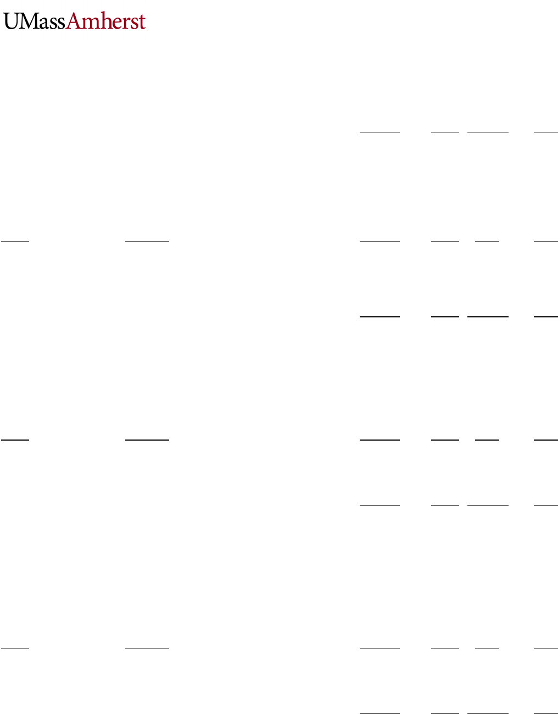

Accounting 221
Course Information
Course title:
Introduction to Financial Accounting I
Course
number:
Acctg. 221
Course
discipline:
Accounting
Course
description:
Introduces accounting with emphasis on the relationships between business events and
financial statements. Regardless of what your major is, financial accounting is one of the most
important classes you will take because it is fundamental to your success in the business world
beyond college. This course can help you understand how to manage finances as well, which
will help you personally! A major objective of the course is to give you a firm grasp of essential
accounting and business terminology and techniques that you will need to succeed in a
business environment. Another objective is to help you develop analytical skills that will serve
you well throughout your academic and professional careers.
Success in this class will
depend on your desire to learn and your willingness to work hard.
Course date:
Tuesday, September 4- December 11, 2018
Location:
Mahar
Meeting
day(s):
Tu, Th
Meeting
time(s):
2:30-3:45
Instructor Information
Name:
Prof. Catherine Lowry
Email:
clowry@isenberg.umass.edu Class TA: Emma Jackson enjackson@umass.edu . Email Emma
with your questions (those not answered in the syllabus). Emma will forward emails she thinks
I need to see. You should however email me with long-term illness issues as soon as you are
aware. Emailing me should be your last resort. See me in person (before or after class or at my
office. If my door is open, please stop in anytime, or come to my office hours listed below). I cannot
guarantee a timely response to emails due to volume.
Office location:
SOM 351
Office hours:
Tu 1-2pm; W 1-3pm; or by appointment –please see me in class to arrange.
Teaching
assistants:
See TA office hours at the class website or outside of SOM 130.
Textbooks
Required
reading:
Fundamental Financial Accounting Concepts, by Edmonds, Edmonds, McNair, and Olds:
McGraw-Hill Irwin Publishers, 10
th
edition- already provided to you (Students enrolled in 221 will
automatically be assessed a course fee as part of their tuition. The course materials fee includes access to Connect
Plus which includes the eBook and assignments, and covers all your material costs. )
Other Course Materials-NEEDED
PRS:
Internet:
Your Personal Response System (PRS) this semester will be the iclicker 2.
Internet access and an OIT account
Adobe:
Adobe Acrobat Reader

Moodle and OWL Access
Introduction:
To access Moodle (for class material, access to OWL's and announcements).
1. Have your active OIT Account information ready.
2. Enter https://oit.umass.edu/ into your browser.
3. Select Moodle under “Services” and select log in. Then enter your NET ID and password.
OWL- Once in the 221 Moodle course, click on the OWL link to get in OWL.
Course Procedures
Course goals:
You are required to attend the scheduled class and be on time. Disruptive behavior will not be
tolerated or ignored. Class sessions will be conducted using both lecture and problem solving
formats. Participation is required. We will be using the iClicker system, which requires you to
answer questions.
Exams: The exams are scheduled far in advance to provide you with ample opportunity to
clear your schedule. There will be no make-ups for missed exams unless;
• I am notified 1 week before the exam,
• grant approval for the make-up, and
• you provide me with documentation of the reason for missing the exam (University
Approved).
FOR EXAMS-DO!!!! Notify me at least 1 week in advance if you have a conflict with the e
xam.
This is done in class the week before the exam. Email
ing or phone messages will NOT work for
a makeup. If you fail to follow this procedure, you will receive a zero for the exam.
The exams will be in multiple-choice format (regularly scheduled exams). I will help you focus
on the appropriate material for exam preparation. Bring a pencil and a non-graphing
calculator. This is YOUR responsibility. The following policies will be strictly enforced:
• No graphing or alphanumeric calculators allowed for the exam, due to potential
academic dishonesty problems. If you forget this rule, you will have to work without
a calculator. You cannot share calculators or trade graphing calculators. If you do
not have a calculator for the exam, you can do the math in your head.
• Bring a couple of #2 pencils with good erasers. The exams will have sufficient
workspace, so you do not need any paper.
Strict academic honesty is expected IN ALL AREAS OF THIS
CLASS. Any student who violates the University policy on
academic dishonesty will fail the course and the University will be
notified of the infraction and may take further steps including
expulsion from the school (see your “Undergraduate Rights and
Responsibilities, 2018-2019” handbook and this link
http://www.umass.edu/dean_students/codeofconduct/ a student
who uses any resource, human or other, that is not specifically
allowed by Professor
Lowry will be in violation of Academic Honesty
Code and will be reported to the Academic Honesty Board. A copy
of Code can also be found on the class website. Some examples of
dishonesty are turning in work that is not yours (including using
solutions on HW, Exams or any other assignments and copying
another students work). If you are uncertain on what is permitted,
it is your responsibility to ask the instructor.
Lectures: Class attendance is expected and is important to your success in this course. Please
be on time and courteous. You need to notify me if you need to leave the class early.
Comings and goings are disruptive for the class.
Extra help: There are many opportunities for extra help with this material. DO NOT put off
getting help. Students do far better on exams when they get extra help on a consistent basis.
Office Hours: Between my office hours (SOM 351), the TA's office hours (SOM 130-
you
can see any TA), and the library’s hours there are over 30 hours of help available. I am
also available by appointment; just see me in class to set up. NOTE: you do not need to just
see your TA, you can see any of the 221 TAs during the office hours listed on the class
website, there are 20 hours!
•OWL Work: The OWL problems give you immediate feedback, and you can keep re-
doing the
problems until you get them right for full credit (until the grade freeze date- see the
assignment listing). You can also go back to do the OWL problems at any time and it may be
helpful to do before a test for a refresher.
•Connect Work: On the “class assignment listing” the text homework due column shows the
assignments to be submitted online via connect. Note that most assignments will be due the
Sunday after we cover the material in class (see listing for complete due dates). These
assignments are from your text, series A exercises and problems. DO PROBLEMS OUT ON
PAPER FROM CONNECT FIRST, THEY ARE ALGORITHMIC IN Connect and therefore the
numbers may not match your text.
•Class Website: The class website will have class announcements, practice exams, copies of
class slides, homework solutions, financial reporting project information, course material
hints/help, links to helpful websites you will use in this class, and your grades on exams.
CHECK THIS OFTEN!!
•Review and practice for the exams: I try to schedule a review (question and answer)
session before each exam. I stay as long as you ask questions and we generally do homework
problems or practice questions from prior exams.
DISABILITY STATEMENT:
The University of Massachusetts Amherst is committed to making reasonable,
effective and appropriate accommodations to meet the needs of students with
disabilities and help create a barrier-free campus. If you are in need of
accommodation for a documented disability, register with Disability Services to
have an accommodation letter sent to your faculty. It is your responsibility to initiate
these services and to communicate with faculty ahead of time to manage
accommodations in a timely manner. As this is a large class, please make sure you
arrange your tests with Disability at least 2 weeks in advance of the tests, since
tests are in the evening and disability is not open after 5, you can take your test with
disability on Friday’s For more information, consult the Disability Services website
at http://www.umass.edu/disability/.

Labs
Lab
Procedures:
You are REQUIRED to attend a lab once a week, as well as the scheduled class.
Most of the lab t
ime will cover homework assigned via the “class assignment listing”, as well as
graded worksheets and quizzes. Homework is essential to learning this material. If you do not
attempt the homework, you will find yourself in trouble come exam time. The labs are
opportunities to revisit areas you found difficult or confusing in the material. DO NOT expect
your lab instructor to be able to cover all of the lecture material (they won't be able to) or all
the homework’s due to time limits. Ask questions in labs and in class!! See lab handouts!!
Your lab instructor will assign and monitor this portion of your grade. All labs will have similar
content and weighting for grading purposes. There is a lab coverage schedule contained in the
"Lab" link on the homepage. Attend the right lab and mark the dates for your lab on your
calendar. If you will miss a lab and have a bona fide excuse (including religious
holidays, jury duty, family crisis, etc...) see me ahead of time (if possible) and I will
put you in another section for that week. Otherwise, no make-ups for missed labs
will be allowed. I know there are reasons to miss a lab without the opportunity for advance
notice, your lab instructor will drop your single lowest grade
in computing your average. Please
see me if you are having trouble and need advice or special consideration due to something
like a long-term illness. Being more than 5 minutes late to lab will cause you to not get a HW
grade for that lab!
OWL and Connect
Owl and
Connect Info.:
Many homework assignments will be computed on-line, using On-Line Web Learning Software
developed here at UMass and McGraw-Hill’s Connect. Each chapter will generally have several
assignments. You will be able to redo the problems for full credit until the due date at the OWL
and connect websites (see assignment listing as well for due dates). However, please note,
the due date on your syllabus is the date the assignment is due! No Extensions are
granted. I do not drop the lowest OWL or Connect HW grades.
There are no makeups or extensions for the OWL homework.
Financial Reporting Project (FRP) and iClicker!!!!
FRP Defined:
iClicker:
The project is an important part of the course and it is detailed in a separate
handout/homepage link. You will review and analyze the annual report of two companies and
turn in assignments. In addition, there may be exam question(s) on concepts from the project.
At almost each lecture, there will be at least 1 Question or Quiz using iclicker! Your iclicker
score will be based equally on participation and correct responses to questions/quizzes.
Obviously you must have YOUR transmitter with you at each lecture to earn points. Our first
day will be Tues. 9/11. See the grading section below for more details. I drop your two
lowest iclicker grades and I scale the overall scores. Therefore, unless it is a long term
illness, there are no makeups. You must register in our Moodle course. It is optional, see
below for grading.

Grades
Grading:
Your grade will be based on a number of factors, which will be weighted and assigned
according to the following chart. I round exams grades to the nearest 1/10 of a percent (e.g.
87.8). The average grade for the course for the past 2 years has been 78-80%. For final grade
assignment, a 93.5 rounds up to an "A", etc.
Weighting:
Exams (22% each)
66%
Financial Reporting Project (FRP)
5%
LAB HW/Worksheets
5%
LAB Quizzes
5%
Connect HW
9%
OWL Homework
6%
iClicker
4%*** Optional
Total
100%
***** Use of the iClicker is optional. If you do not use it, 4% of your grade will go
to your final exam. iClicker cannot hurt your grade.
Target Grade Cutoff
A:94-100%; A-:90-93%; B+:86-89%; B:83-85%; B-:80-82%;
C+:77-79%;C:74-76%; C-:70-73%; D+:65-69%; D:60-64%;
F:Below 60%